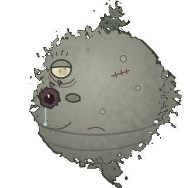

Chamesle is pronounced /tʃa.mes.le/. It's a small project, so things move at that speed.
Roadmap
- 0.1Xfce live ISO, Windows-like layout, Flathub, firmware and drivers.
- 0.2Installer (dual boot, encryption), the system on apk and the Chamesle repo, .deb and .rpm support.
- 0.3A GNOME edition. (The update notifier and driver manager came early, in 0.2.)
- 0.4Updates can't break your computer. Before every update Chamesle takes a snapshot of the system, and if something goes wrong you pick "before the update" in the boot menu and you're back. Only the system is snapshotted, never your files, and only the last 3 are kept, so they don't eat your disk. Plus the first Flavor: Chamesle Astro, for astronomy.
- 0.5A KDE Plasma edition, and a friendlier start: our own login screen on every edition, a boot menu that's easy to read, and a blue screen that says what went wrong if the system ever crashes, instead of a wall of text.
- 0.6Jiggity, our own installer. One 620 MB download for every desktop, like Debian's netinst: Jiggity asks everything up front, your language, network, account, disk and which desktop you want, then downloads and installs it, and you restart into it. A new server edition is one of the choices. Chamesle also gets lighter: faster to start and less memory used. Plus three Flavors: a gaming one with Steam, Proton and controllers ready to go, Ranni, KDE Plasma set up to feel like a Mac: a menu bar at the top, a dock at the bottom and Spotlight-style search, and TTY, the console with floating windows on top, on ttywm, our own window manager. And a faster kernel: CachyOS's LTS kernel, tuned for desktops, with a QR code on the crash screen that turns into a readable crash report.
- 0.7Be Kool: a look of our own. Chamesle Glass on every edition except GNOME: glass frames and taskbar, glossy buttons, Oxygen icons and a new logo. A glass sign-in screen, and a better store: screenshots, ratings and reviews, updates in the background and firmware updates for your BIOS and SSD.
- 0.8Chamesle's own apps in every language, and a pass on accessibility: screen reader, high contrast and large text from the first boot.
- 0.9Release candidate: no new features, just fixes. Try it on your computer and tell us on the board what breaks, so 1.0 works on as many machines as possible.
- 1.0Godrick, with Serp: a desktop of our own, made for Chamesle from the ground up. Serp gets a public beta before 1.0, so you can try it and tell us what to fix.
No dates for these. Once 1.0 is out, there's a new ISO every 6 months, and the version names follow Elden Ring's bosses: Margit until 1.0, then Godrick, Rennala and Radahn.
Stable rolling
Chamesle updates every week, like a rolling distro, but slowly on purpose: a new version waits a while before it goes out, and every week's updates have to install and boot in a test machine first. The kernel stays on the long-term support line.
How it's built
Each ISO is made by one script, build.sh, from a list of packages per edition. The init system is dinit,
the boot is GRUB with a small initramfs of our own, and the desktop look is Chamesle Glass, our own theme, with the Oxygen icons.
All of it is in the GitHub repo if you want to build your own.
The package repo is built by our own tools: every package is converted to apk, signed with the Chamesle
key and indexed. The tools are in tools/repo/.
Side project
Chamesle Source is the opposite of Chamesle Linux: a kernel that starts straight into vi, and nothing else. You write the shell and everything after it.
Help out
- Try it and report what breaks.
- Test it on your hardware, especially laptops and anything with NVIDIA.
- Pull requests are welcome. Small ones are easier to review. The code is on GitHub.
- Chip in on Ko-fi. It pays for the mirrors and test hardware.
- Tell a friend who's thinking about leaving Windows.
cheers @tortr-rs

License
Chamesle's own code is open source on GitHub. The packages keep their own licenses; source code for every package is available on request (open an issue). Some packages, like firmware and the NVIDIA driver, are not open source.
Contact
Issues and questions go on GitHub.
Meet Chum

Chum is a sunfish. He is the mascot of Chamesle Linux, mostly because nobody else wanted the job.
He can't see. He doesn't have a tail fin, so he mostly drifts. He has never once been asked for his opinion, and he has one about everything.
You won't find him on the front page. That's on purpose. If you're reading this, you looked around, and Chum respects that.
Favourite food: jellyfish, and whatever drifts past his mouth. Favourite package: sl.
Least favourite: the Konami code. Don't ask.